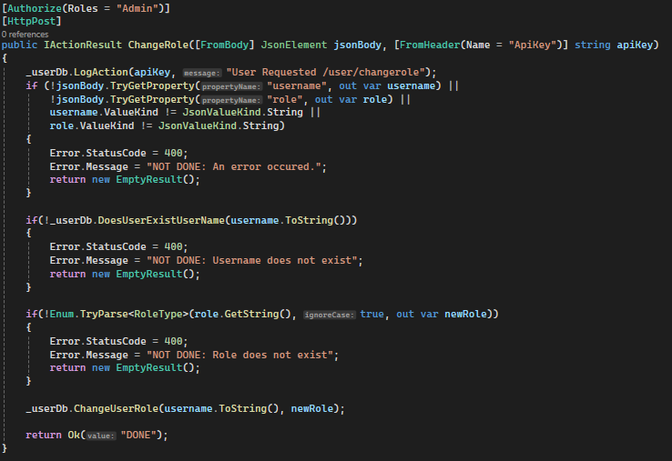
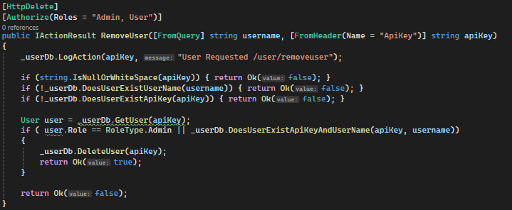
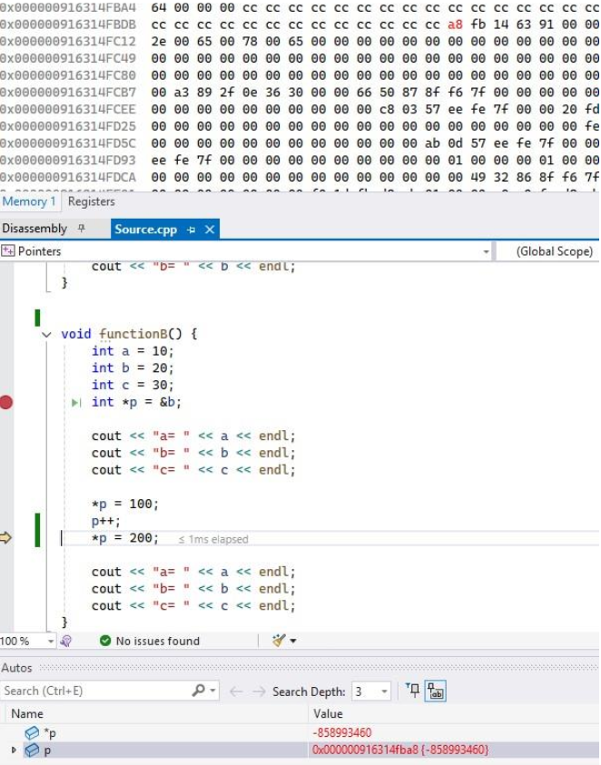
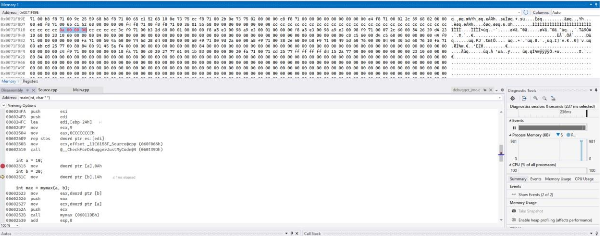
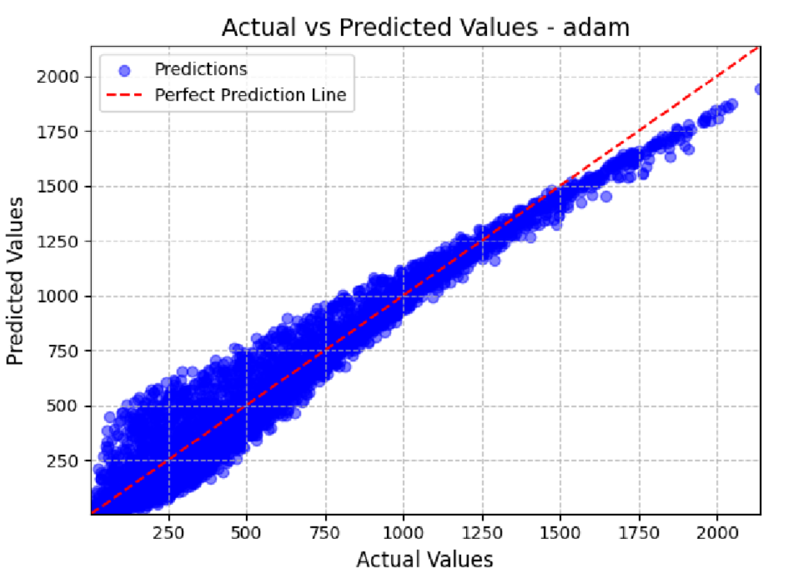
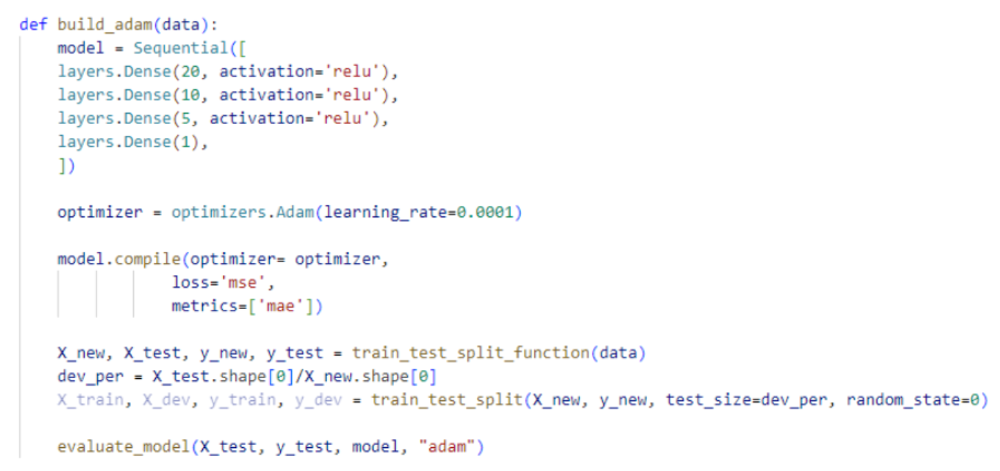

My University work
Here is a collection of projects that I completed in second and third year of university. This is not an exaustive list of my work here, but these are the projects more geared towards games programing.
Here is a collection of projects that I completed in second and third year of university. This is not an exaustive list of my work here, but these are the projects more geared towards games programing.


I developed a RESTful client-server API using HTTP requests, with controllers handling different routes and standard methods such as GET, POST and DELETE. The server uses API keys for authentication and middleware to handle both authentication and role-based authorisation.
Entity Framework was used to manage the SQL database and provide CRUD operations for users and logs, with database access separated into its own class to maintain loose coupling. I also implemented encrypted communication between the client and server using RSA and AES encryption. The RSA private key was securely stored through the machine's certificate store rather than directly in application memory.
For this module I developed my understanding of C++ through a series of programming tasks covering memory management, pointers, object-oriented programming, file handling and data structures. I used Visual Studio's debugging and disassembly tools to explore how C++ code is translated into assembly and how memory and registers are handled at runtime.
I also developed a social-network style program that stored users and their relationships using vectors, unordered maps and sets. I implemented features such as finding mutual friends, calculating degrees of separation and suggesting friends using Breadth-First Search. I then profiled the different operations and made changes to improve performance, particularly by reducing unnecessary searches and using hash-based data structures for faster lookups.




For this project I explored using machine learning and AI algorithms to solve a route optimization problem. I built and evaluated multiple regression models to predict travel costs from environmental and traffic data, including linear regression, polynomial regression and a neural network. I also worked with data preprocessing techniques such as one-hot encoding, standardization and train/test splitting.
I then used the predicted costs to create a weighted grid and compared different path finding algorithms, including DFS, BFS, Dijkstra's and A*. I also implemented a Q-Learning agent that learned to navigate a grid while avoiding obstacles. I experimented with its hyper-parameters, testing different learning rates, discount factors, exploration rates and episode counts to improve its performance./p>